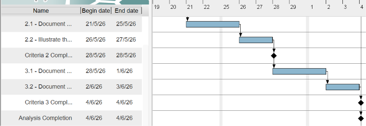
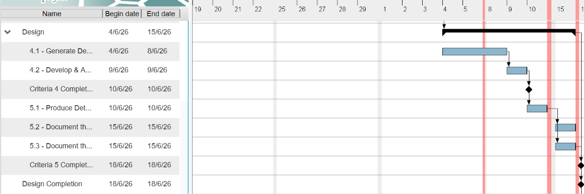
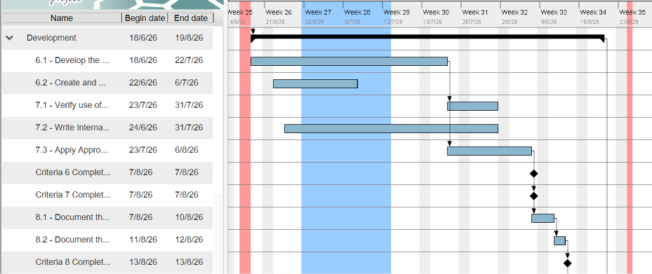
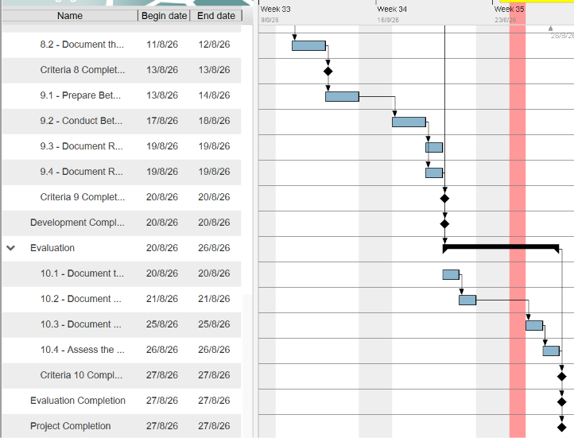

Throughout the project lifetime, several modifications were made to the original plan modelled as a Gantt Chart.
| Modification | Description | Original |
|---|---|---|
| Modification 1 | Originally, Criteria 2 was due for completion on the 28th of May and Criteria 3, and as such the completion of the analysis phase, on the 4th of June. However, both of these completion dates were shifted to the 19th of June, which would have extended the duration of the project by 15 days. |
 |
| Modification 2 | To account for this increase in time for Criteria 2 and Criteria 3, Criteria 4 and 5 were cut down in time so that their completion date was only extended to the 23rd of June, as opposed to their original completion dates of the 10th of June and 18th of June. Ultimately, the design phase was shortened and had its completion date delayed by 5 days, which impacted the start of the development phase. |
 |
| Modification 3 | Criteria 6 and 7 had their completion dates merged with Criteria 8 and moved to the 13th of August from their original completion dates of the 7th of August. This was to account for how many of the tasks during Criteria 8 overlapped with Criteria 6 and 7, making it beneficial to run them concurrently. |
 |
| Modification 4 | Finally, Criteria 9 had its completion date changed to align with Criteria 10 and its completion date, shifting from the 20th of August to the 27th. This was done as I fell sick that week, meaning less work than initially planned was able to be completed. |
 |
Ultimately, the Gantt Chart served as an effective tool to model the project plan, as it provided clear times for when tasks should begin, how long they should take and when they should be completed. This meant
all required tasks were accounted for and none ran overtime or began late. Furthermore it provided the ability to model predecessor tasks, ensuring tasks that needed to be completed before another were while visualising
what tasks could be run concurrently to save time.
Otherwise, it was able to be modified to reflect changes easily, with tasks able to be extended and shifted as required to reflect overtime, unexpected interuptions and other unplanned events. As such the damage done to the effectiveness
of the project plan due to required modifications was limited, however they still challenged the accuracy of it. As constant journaling and updating of the Gantt Chart was required to ensure task dates and durations remained correct despite
changing deadlines and originally planned work days, this can be seen with the modifications of the completion times of criteria 2,3,4,5,6,7 and 9 as extensions caused a flow on effect which often required durations to be shortened and further
Criterias delayed if I wished to maintain the original project completion date of the 27th of August.